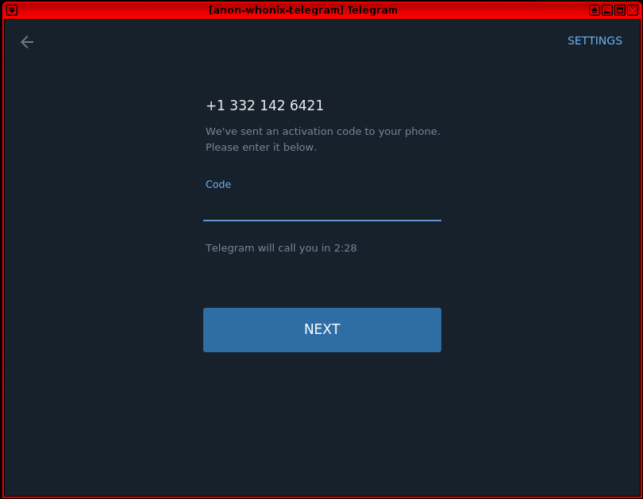

{kind=link}
We believe security software like Whonix needs to remain Open Source and independent. Would you help sustain and grow the project? Learn more about our 14 year success story and maybe DONATE!
SignalDocumentationVoIPPrevious page: SignalIndex page: DocumentationNext page: VoIPSend Telegram Messages over Tor with Whonix

Use Telegram over the Tor network with Whonix.
Introduction
 Telegram Desktop,
Telegram Desktop,
- requires Phone Number Validation;
- has no end-to-end encryption for official desktop client.
It is therefore unrecommended at this time as a messenger.
Telegram is a cross-platform, fully featured instant messenger. The Telegram FAQ describes the basic architecture:
Telegram is a messaging app with a focus on speed and security, it's super-fast, simple and free. You can use Telegram on all your devices at the same time -- your messages sync seamlessly across any number of your phones, tablets or computers. Telegram is one of the top 5 most downloaded apps in the world with over 1 billion active users.
With Telegram, you can send messages, photos, videos and files of any type (doc, zip, mp3, etc), as well as create groups for up to 200,000 people or channels for broadcasting to unlimited audiences. You can write to your phone contacts and find people by their usernames. As a result, Telegram is like SMS and email combined -- and can take care of all your personal or business messaging needs. In addition to this, we support end-to-end encrypted voice and video calls, as well as voice chats in groups for thousands of participants.
Advantages include: [1]
- access to chats across multiple devices
Disadvantages include:
- The application requires the user to register a phone number to create a Telegram account. See also Phone Number Validation.
- End-to-end client encryption is not enabled by default.
- The desktop and web versions have no end-to-end encryption feature. Messages from non-encrypted chats are stored on Telegram's servers and Telegram team has access to it according to section 3.3.1 of privacy policy (archived at time of writing). Telegram moderators may check messages that users have reported, as stated in section 5.3 of privacy policy. Telegram notified eSafety Commissioner of the Australian Government about moderation in secret chats:[2]
Telegram stated that messages in Secret Chats were not 'forwarded' to moderators when they were reported by an end-user. Without access to the messages being reported, Telegram reported that it relies on alternative signals or indicators to determine if 'the reported user is not otherwise engaging in harmful or malicious behaviour'
- The mobile version has easily confused encrypted versus non-encrypted chats.
- Telegram does not have encrypted group chats, channels and chats with bots.
- Telegram stores cloud chats on devices (mobile and desktop) in an unencrypted form, which allows authorities to access messages without logging into the account. Deleted messages in cloud chats can be easily recovered through forensic analysis. [3]
- Telegram sends the user's personal data to the interlocutor to the chat: registration date (month and year), region of the phone number, common groups, and any changes to the name and avatar (if it have been changed in the past 30 days). [4]
- For the purpose of encrypted chats, it is better to use a messenger that is always encrypted end-to-end by default.
- Journalists have established, that server infrastructure Telegram is controlled by a man whose companies have collaborated with Russian intelligence services. [5]
- MTProto 2.0 has been repeatedly criticized by cryptography experts. [6]
- Telegram generates an unencrypted, device-unique auth_key_id prepended to every MTProto packet, enabling intelligence agencies with traffic visibility to track users' IP addresses, geolocation changes, and communication metadata globally. [7]
- Telegram collects a lot of metadata: IP address, devices and Telegram apps you've used, history of username changes, etc. This metadata can be kept for 12 months, as stated in section 5.2 of privacy policy.
- Telegram cooperates with intelligence agencies and may share user data (IP address and phone number), as stated in paragraph 8.3 of the privacy policy.
- Police and intelligence agencies often export Telegram account data. This can reveal which chats and channels a user participated in (even if they have left and deleted messages), which channels they created and what they posted, as well as drafts, IP address history, and saved sticker history for the past 12 months. [8]
This is why it is not recommended for anonymous messaging at this time.
One viewpoint is to see Telegram as a modern public chat or IRC alternative.
Telegram Data Harvesting
Telegram collects information about the operating system, sends it to the server, stores it there, and then sends a message to the user without end-to-end encryption. Here is an example:
Device : Telegram Desktop, 4.6.5 Snap, Desktop, Linux Qubes X11 glibc 2.35Telegram, service notifications [9]
This means Telegram has collected at least:
Category |
Value |
|---|---|
Device |
Telegram Desktop |
Installation method |
Snap |
Telegram version number |
4.6.5 |
Operating system kernel |
Linux |
Operating system |
Qubes |
Window manager |
X11 |
System libraries detected |
glibc 2.35 |
This has sparked discussion among users:
- https://forum.qubes-os.org/t/how-to-hide-the-fact-that-im-qubes-os-from-telegram/22934?
- https://forum.qubes-os.org/t/telegram-desktop-identifying-qubes-in-standalonevm/17906
- https://forums.whonix.org/t/qubes-identifiers/17994
See also: VM Fingerprinting
Telegram User Freedom Threats
As defined in
 User Freedom Threats:
User Freedom Threats:
- Proprietary Tethers
- RegistrationRequired
- Non-freedom network service
- Enforced centralization
Installation
telegram-desktop can be installed from Debian backports.
This is non-ideal, see footnote. [11]
1. Update the package lists.
sudo apt update
2. Install the select software.
sudo apt -t trixie-backports install telegram-desktop
3. Done.
The procedure of installing the package from the backports repository is now complete.
Start
To launch the application, in Whonix-Workstation™ terminal run.
telegram-desktop
Figure: Telegram Desktop in Whonix [12]

For a basic Telegram user guide refer to this official blog entry.
See Also
Footnotes
- https://telegram.org/faq
- https://www.esafety.gov.au/sites/default/files/2025-03/BOSE-responses-to-mandatory-notices-tvec-March2025.pdf
- * https://www.bleepingcomputer.com/news/security/telegram-desktop-saves-conversations-locally-in-plain-text/ * https://dl.acm.org/doi/10.1145/3727641 * https://www.sciencedirect.com/science/article/pii/S2666281722001287
- * https://forums.whonix.org/uploads/default/original/2X/8/8597a02f6a2c2a1d510f9cf4e7cdfa7bc4142daf.jpeg * https://forums.whonix.org/t/recommended-private-chats-and-social-networks-for-whonix/21561/67
- * https://istories.media/en/stories/2025/06/10/telegram-fsb/ * https://rys.io/en/179.html * https://www.wired.com/story/the-kremlin-has-entered-the-chat/
- * https://blog.cryptographyengineering.com/2024/08/25/telegram-is-not-really-an-encrypted-messaging-app/ * https://eprint.iacr.org/2022/088 * https://eprint.iacr.org/2022/595 * https://mtpsym.github.io/ * https://dl.acm.org/doi/10.1145/3727641
- * https://rys.io/en/179.html * https://static.istories.media/uploaded/documents/d92f02fe94f64906887d290489e26d14.pdf * https://www.pwnallthethings.com/p/russia-is-spying-on-telegram-chats
- * https://thedroidguy.com/export-telegram-chat-history-step-by-step-guide-for-beginners-1262085 * https://abarona.org/ru/article/vse-pro-eksport-istorii-v-telegram/
- https://forum.qubes-os.org/t/telegram-desktop-identifying-qubes-in-standalonevm/17906
- telegram-desktop version in Debian stable (
buster) at the time of writing showed a warning that soon it will be no longer functional.
Hence using Debian backports version. Not installing from telegram website since telegram does not provide digital software (gpg) signatures.You are using an outdated app that is no longer supported. To access your messages, please update your app to the latest version.
- Users should
 Prefer Packages from Debian Stable Repository, but using backports is
better than manual software installation or using third party package
managers since this prefers APT. To contain the risk, Non-Qubes-Whonix users
might want to consider using Multiple Whonix-Workstation™ and Qubes-Whonix™ users might
want to consider using Multiple Qubes-Whonix™ Templates or
Software Installation in an App Qube.
Prefer Packages from Debian Stable Repository, but using backports is
better than manual software installation or using third party package
managers since this prefers APT. To contain the risk, Non-Qubes-Whonix users
might want to consider using Multiple Whonix-Workstation™ and Qubes-Whonix™ users might
want to consider using Multiple Qubes-Whonix™ Templates or
Software Installation in an App Qube. - A false (random) phone number was utilized for this image.
Categories: Documentation